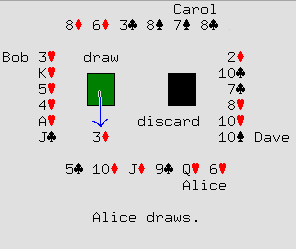
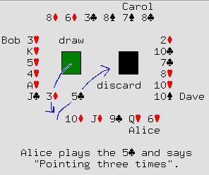
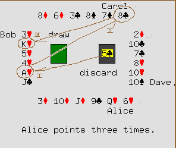
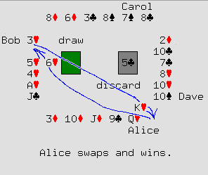

Segmentation Fault: A Card Game
Introduction
"Segmentation Fault" is a game for four to seven players, using a
normal deck of playing cards (without jokers). The gimmick behind the
game is indirect reference: based on their value and
position, cards can point to other cards, which may point to other
cards, and so on. In order to win the game, you need to keep track of
which cards are pointing where, and figure out how to construct a trail of
pointers from the cards in your hand to the cards you want to
manipulate.
Setting Up
To start a hand of Segmentation Fault, shuffle the deck and deal each
player six cards in a row, face-up. Except as provided for in the
rules, players may not rearrange the cards in front of them.
Place the rest of the deck in the center of the table, face-down.
Players will draw cards from that deck, and discard their cards in a
face-up pile next to it.
The player with the highest-valued card (king highest) goes first.
(If two or more players are tied for this honor, use the next-highest-valued
cards in their hands as a tie-breaker.) Play proceeds to the left.
Referring to Cards in Other Players' Hands
Any card in your hand, except a king, points to a card in your
neighbor's hand, according to this scheme:
| If your card is... |
it points to this card...
(reading counter-clockwise) |
of the player on your... |
|---|
| an ace | first | left |
| a deuce | second | left |
| a three | third | left |
| a four | fourth | left |
| a five | fifth | left |
| a six | last | left |
| a seven | first | right |
| an eight | second | right |
| a nine | third | right |
| a ten | fourth | right |
| a jack | fifth | right |
| a queen | last | right |
The four diagrams on the upper right show the same layout of cards
from a game in progress. The brown arrows show how some of the cards
in the game point to other cards. Note that the jack in Alice's hand
points to a card in Dave's hand, while the jack in Bob's hand points
to a card in Alice's hand.

Moves
Each player's move has four phases: draw, play, point, and swap.
Draw
Draw a the top card from the deck. (If there are no cards left on the
deck, shuffle the discard pile, flip it over, and draw the top card
from there.)
In the diagram on the left, Alice has drawn the three of diamonds.

Play
Decide which card you want to play in this move. If you want
to play the card you just drew, place it on the discard pile,
face-up. If you want to play a card that is already in your hand,
place that card on the discard pile, and put the card that you drew in
its place.
When you play the card, declare how many times you will be
pointing in the next phase of your move; we will see
what this means in the next section.
In the diagram on the right, Alice has decided to play the five of
clubs, pointing three times. She puts that card on the discard
pile, declaring "Pointing three times", and puts the three of diamonds
in its place. She could have chosen to play any other card in her
hand, or the three of diamonds itself.

Point
Indicate which card the card you just played is pointing to. (For the
purpose of the pointing rule, treat it as a card in your hand, even
though you just discarded it.) If you are pointing twice, indicate
which card that card points to, and so on, until you have
pointed the number of times you declared.
A king does not point to anything. It's OK for your sequence of
pointing to end on a king, but if you miscalculated and
declared you were pointing from a king, you have committed a
segmentation fault; you must throw away all your cards and drop
out of this hand.
The diagram on the left shows the sequence of pointing from the card
that Alice played. Note that:
- The hand that a card points to is determined by the card's
position and number, and not by whose turn it is. Even
when it is Alice's turn, the eight in Carol's hand points to a
card on Carol's right, not to a card on Alice's right.
- The sequence of pointing ends on Bob's king. This is fine. If,
however, Alice had said "pointing four times" instead of
"pointing three times", she would have committed a segmentation fault
and lost the hand. She would have thrown away all her cards, and
Bob's jack, which had previously pointed to Alice's queen of hearts,
would point to Dave's ten of clubs.

Swap
Take the last card that you pointed to and swap it with any card in
your hand.
In the diagram on the right, Alice swaps the king, the last card
pointed to in the previous phase, and swaps it for her six. She could
have swapped it with any other card in her hand.
Victory
You win the hand if, at the end of your turn, the cards in your hand
(not including the card you have played) have
any of the following:
- Four cards with the same number. (They do not have to be next to
each other.)
- At least five cards in a sequence, like a "straight" in poker.
(Those cards do not have to be arrayed in order in front of
you, as long as they're all there.) The ace follows the king
and precedes the deuce: Q-K-A-2-3-4 is a winning hand.
- All six cards of the same suit.
In the diagram on the right, after she acquires Bob's king, Alice has
a straight, and therefore wins the hand.
If Alice had not won the hand, another player would have: Bob was one
move away from a flush, and both Carol and Dave were one move away
from four of a kind.
Acknowledgements
Thank you to the people who playtested and commented on earlier
versions of this game: Jennifer Gordon,
Amy Bernstein,
Chana Gershon,
Andrew Greene,
Heather Greene,
Jon Kamens,
and Rachael Nislick.
The diagrams on this page were made with the help of yudit, unifont,
ImageMagick and the GIMP.
Seth Gordon // sethg@ropine.com // August 2003 //
comments?